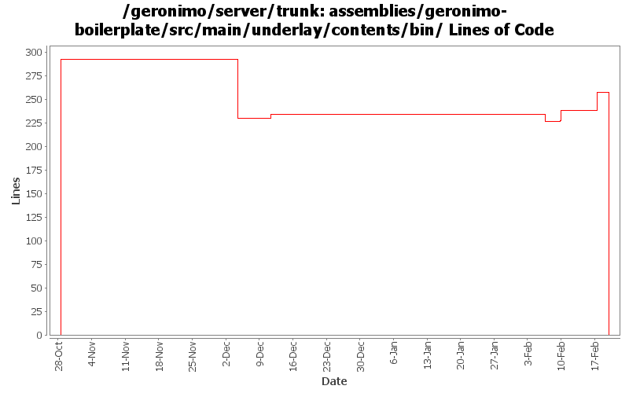

[root]/assemblies/geronimo-boilerplate/src/main/underlay/contents/bin

| Author | Changes | Lines of Code | Lines per Change |
|---|---|---|---|
| Totals | 71 (100.0%) | 596 (100.0%) | 8.3 |
| djencks | 36 (50.7%) | 292 (49.0%) | 8.1 |
| gawor | 32 (45.1%) | 254 (42.6%) | 7.9 |
| dwoods | 3 (4.2%) | 50 (8.4%) | 16.6 |
GERONIMO-4538 Move stuff around so framework is self contained and builds the framework server. No groupId changes in this revision in case people dont like this change
0 lines of code changed in 18 files:
GERONIMO-4389 Can't start server when install it in a directory containing space. Patch from Jack Cai to fix an issue with the javaagent settings on Unix/Linux/Mac.
45 lines of code changed in 1 file:
Make sure error code of batch scripts is returned properly. Based on suggestions from Jack Cai (GERONIMO-4525)
11 lines of code changed in 8 files:
Additional batch file updates based on suggestions from Jack Cai (GERONIMO-4525)
1 lines of code changed in 1 file:
fix svn:eol-style property for batch files
168 lines of code changed in 1 file:
use exit /b n to set error code on windows - based on patch from Jack Cai (GERONIMO-4525)
29 lines of code changed in 9 files:
Allow JAVA_HOME to point to a JRE in Windows OS. Patch from Jack Cai (GERONIMO-4462)
1 lines of code changed in 1 file:
display complete usage info for geronimo stop command. Patch from Jack Cai (GERONIMO-4463)
4 lines of code changed in 2 files:
remove GERONIMO_BASE from scripts and pass org.apache.geronimo.home.dir system property instead of org.apache.geronimo.base.dir (GERONIMO-4229)
27 lines of code changed in 6 files:
use GERONIMO_HOME instead of GERONIMO_BASE to resolve files in bin or lib directories. Patch from Russell E Glaue (GERONIMO-4229)
13 lines of code changed in 4 files:
GERONIMO-4389 updated patch from Jack
3 lines of code changed in 1 file:
GERONIMO-4389 Can't start server via geronimo.sh when install path contains a space. Thanks to Jun Jie Cai (Jack) for the patch.
2 lines of code changed in 1 file:
GERONIMO-4382 Use plugin installing to create a new server instance in a geronimo installation. Also requires separating boilerplate into the installation and server (var) bits
292 lines of code changed in 18 files: